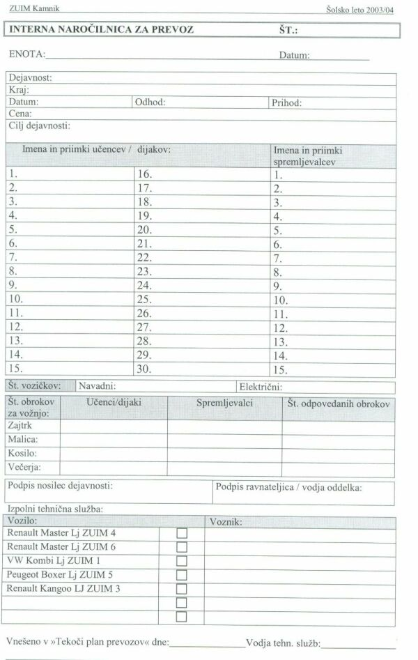

|
Tehnologíja (grško: tehne - spretnost + logos: beseda, raèunanje + pripona ia) 1. veda o naèinih izdelovanja, èesarkoli že, in 2. skupek takih postopkov od zaèetnega do konènega stanja. Na svetu ni izdelka, ki bi nastal brez tehnologije. Obstajajo denimo mehanska tehnologija (vrtanje, struženje, žaganje, brušenje, rezkanje, skobljanje itd.), tehnologija materiala, kemijska tehnologija itd. "Tehnologija" pod vplivom anglešèine zadnje èase v slovenšèini zelo izriva izraz tehnika in je v nekaterih primerih že tudi prevladala, na primer informacijska tehnologija. Tehnološko navodilo za delo je torej nabor korakov, potrebnih za izvedbo nekega dela, opravila ali delovne naloge. Pridevnik "tehnološko" se navezuje na dejstvo, da igra v tem opisu dela še posebej pomembno vlogo opis naèina izvedbe naloge. Tako je v primerih, ko si pomagamo pri delu s posebej zahtevnimi in zapletenimi postopki, stroji, orodji in delovnimi okolji. V posameznih primerih mora doloèen èlan organizacije iz razliènih razlogov odpotovati v drug kraj. Primer bi bil lahko tudi organizacija obiska Tehniènega muzeja Slovenije v Bistri pri Vrhniki. Denimo, da želi uèitelj v programu "Raèunalnikar" organizirati za dijake tega programa obisk omenjenega muzeja. Èe želi organizirati prevoz z enim od vozil v lasti ZUIM, mora v tajništvu te organizacije zaprositi za potni nalog. Interna naroèilnica je tak dokument, s katerim zabeležimo vse pomembne podatke v zvezi s prevozom oseb ali blaga. Primer: Dne 12.12.2007 je ob 7.45 izpred ZUIM Kamnik na pot proti Bistri pri Vrhniki krenilo vozilo znamke Renault Master z registrsko oznako "LJ - ZUIM 4". Na ogled Tehniškega muzeja je peljalo dijake prvega letnika programa "Raèunalnikar". Vozilo je upravljal Slavko Kobetiè, spremljevalni uèitelj je bil Dušan Èeferin. V Bistro so prispeli ob 8.35. Bistra je oddaljena od Kamnika približno 65 km. Ogled muzeja so konèali ob 12.00. Takoj po ogledu so krenili domov. Pred ZUIM so prispeli ob 13.15. Stanje števca na zaèetku vožnje je bilo 184.432 km.  Slika 1: Interna naroèilnica za prevoz oseb v ZUIM Kamnik. 1. Vprašanja za usmerjanje pozornosti in usvajanje novih besed: 1. V èem se razlikuje tehnološko navodilo za delo od obièajnega delovnega navodila? 2. Kdaj je tehnološko navodilo za delo še posebej potrebno? 3. Razloži pomen besede "tehnologija"! 4. Kako se imenuje obrazec, s katerim zabeležimo v ZUIM Kamnik vse pomembne podatke v zvezi s prevozom oseb? 5. Kaj vpišemo v obrazec "Interna naroèilnica za prevoz" v polje "Enota" za primer v tej uèni enoti? 6. Kaj vpišemo v obrazec "Interna naroèilnica za prevoz" v polje "Datum" za primer v tej uèni enoti? 7. Kaj vpišemo v obrazec "Interna naroèilnica za prevoz" v polje "Dejavnost" za primer v tej uèni enoti? 8. Kaj vpišemo v obrazec "Interna naroèilnica za prevoz" v polje "Smer vožnje" za primer v tej uèni enoti? 9. Kaj vpišemo v obrazec "Interna naroèilnica za prevoz" v polje "Odhod" za primer v tej uèni enoti? 10. Kaj vpišemo v obrazec "Interna naroèilnica za prevoz" v polje "Prihod" za primer v tej uèni enoti? 11. Kaj vpišemo v obrazec "Interna naroèilnica za prevoz" v polje "Cilj dejavnosti" za primer v tej uèni enoti? 12. Kaj vpišemo v obrazec "Interna naroèilnica za prevoz" v polje "Število vozièkov/navadni" za primer v tej uèni enoti? 13. Kaj vpišemo v obrazec "Interna naroèilnica za prevoz" v polje "Število vozièkov/elektrièni" za primer v tej uèni enoti? 14. Kaj vpišemo v obrazec "Interna naroèilnica za prevoz" v polje "Voznik" za primer v tej uèni enoti? 15. Kaj vpišemo v obrazec "Interna naroèilnica za prevoz" v polje "Spremljevalci" za primer v tej uèni enoti? 2. Zapiši od ene do pet kljuènih besed, ki povzemajo vsebino te uène enote. 3. Vprašanja za razmislek, ponavljanje in povezovanje z lastno izkušnjo: 4. Domaèa naloga: V enem do petih stavkih zapiši, kaj ti je v tej uèni enoti najbolj ostalo v spominu. |